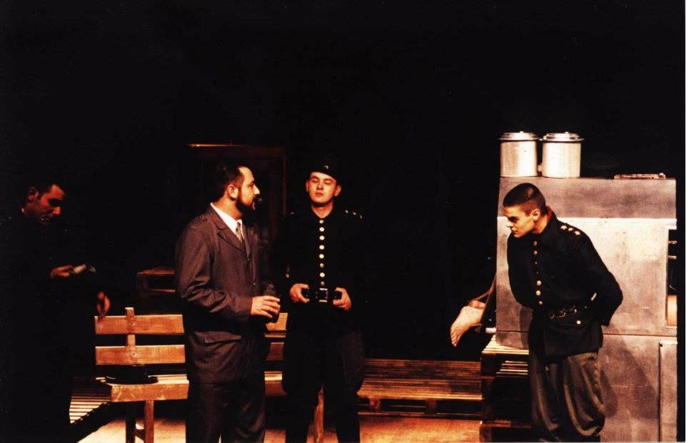

Direção: Emerson Rechenberg.
Foi uma ocupação de um mês do Moinho Paranaense, no bairro Rebouças, em Curitiba, que posteriormente se tornou uma sede da Fundação Cultural de Curitiba. Éramos 20 artistas, entre atores, músicos e fotógrafos, fazendo uma instalação que ocupava todo o prédio, que naquele momento da história era completamente insalubre.
Grupo Elenco de Ouro. Direção: Cleber Braga. Temporada no DAMC — diretório acadêmico de medicina, Curitiba.
Participei como convidado de um processo de criação do grupo Elenco de Ouro, fazendo uma preparação corporal que procurava conectar voz, corpo e texto. Esse interesse eu fui desenvolver mais tarde na Casa Hoffmann, em performances como “Dois Corações e um Bebê” e “O Laboratório Multiceptivo do Dr. Schwitters”.
Adaptação do conto “Na Colônia Penal”, de Franz Kafka. Direção de Emerson Rechenberg. Estreia no Teatro José Maria Santos, Curitiba, seguida de turnê pela região Sul.
